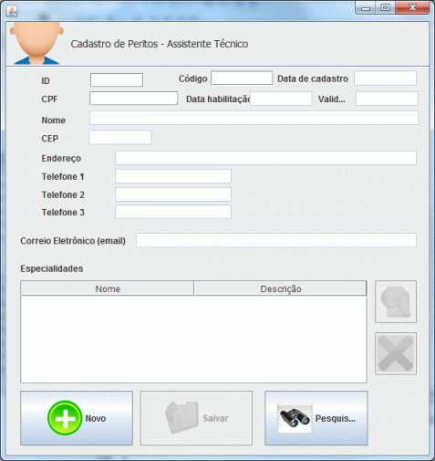
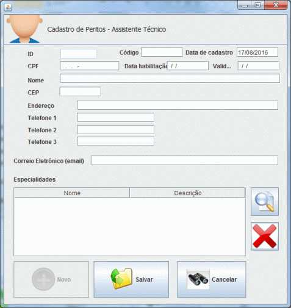

Assistente Técnico
Ajuda

Cadastramento de Assistente Técnico
A tela principal para cadastramento de peritos separa os assistentes de acordo com a especialidade e organiza de acordo com a "Última contratação".
Ao clicar em novo a tela tem dois modos:
MODO Pesquisa, reproduzido abaixo, onde estão disponíveis duas ações:
1.Pesquisar: Recuperar para edição ou visualização um Assistente anteriormente cadastrado através da digitação do campo Código, ID, ou CPF e após clicando-se no botão "Pesquisar"
2.Novo: Abrir tela para cadastramento de novo Assistente, clicando-se no botão "Novo"

Efetuando-se quaisquer das ações acima, a tela passa para o
MODO "Cadastro", reproduzido abaixo:

Na tela de cadastro, estão disponíveis as seguintes ações:
1. Salvar: o clique no botão "Salvar" salva, após as devidas validações, os dados digitados nos campos da tela no Banco de Dados, tanto na inclusão de um novo assistente quanto na edição de um já existente.
2. Cancelar: o acionamento deste botão retorna a tela ao modo "Pesquisa", limpando todos os campos da tela e descartando quaisquer alterações realizadas e não salvas.
A tabela "Especialidades" e os dois botões ao seu lado servem para a vinculação de especialidades ao Assistente. A lupa abre janela para escolha ou cadastramento de especialidades e o "X" vermelho desvincula a especialidade selecionada. A tabela especialidades exibirá o texto das especialidades vinculadas a este Asssistente, um em cada linha.